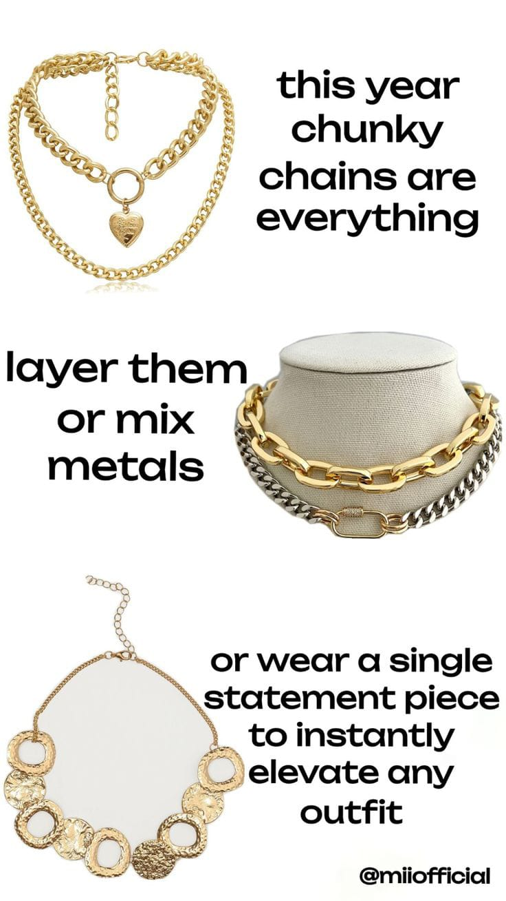
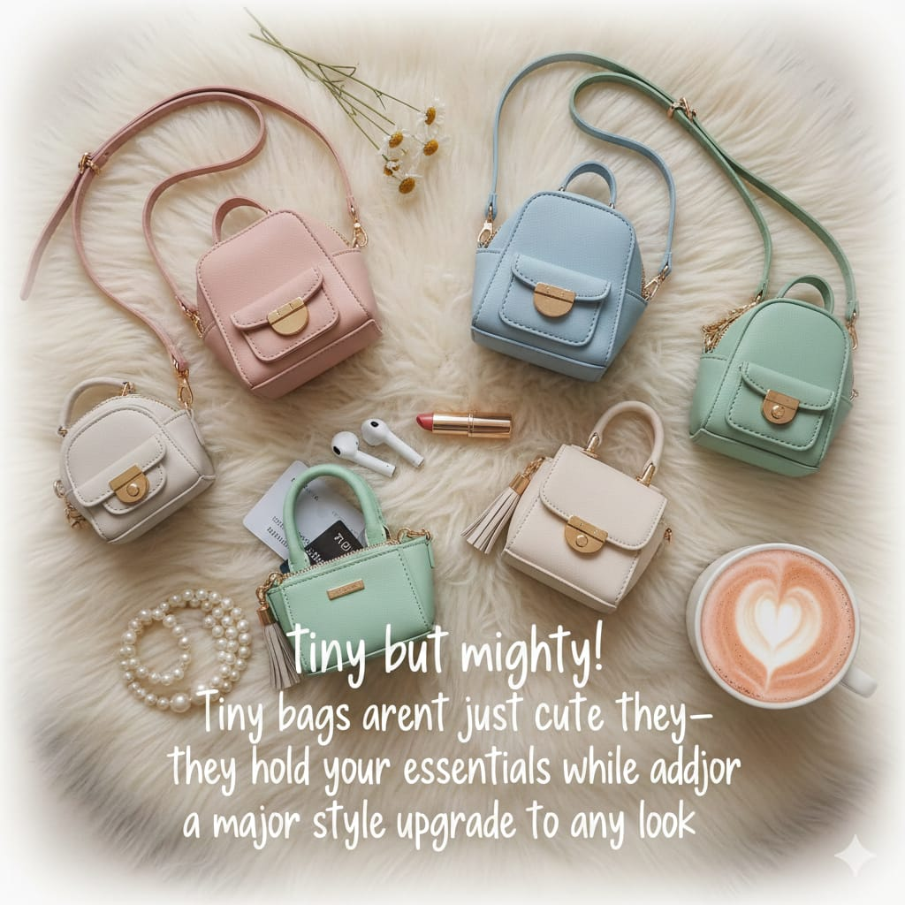
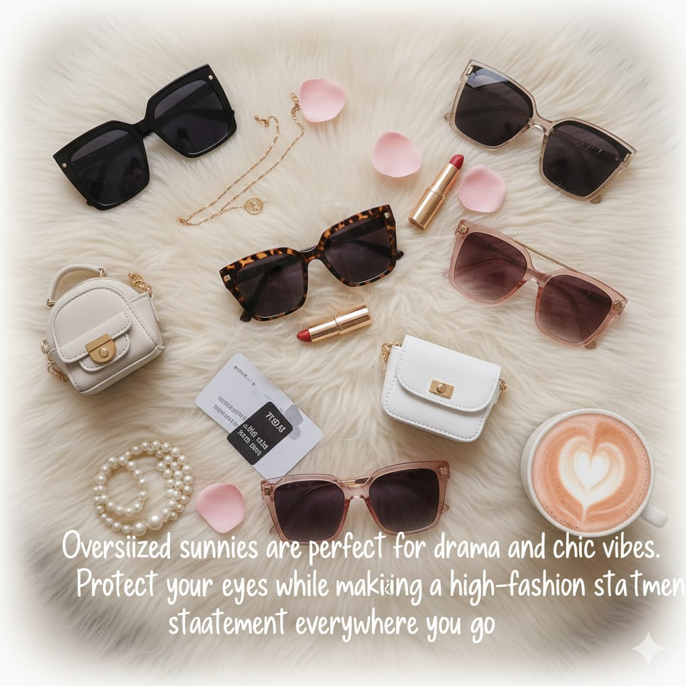
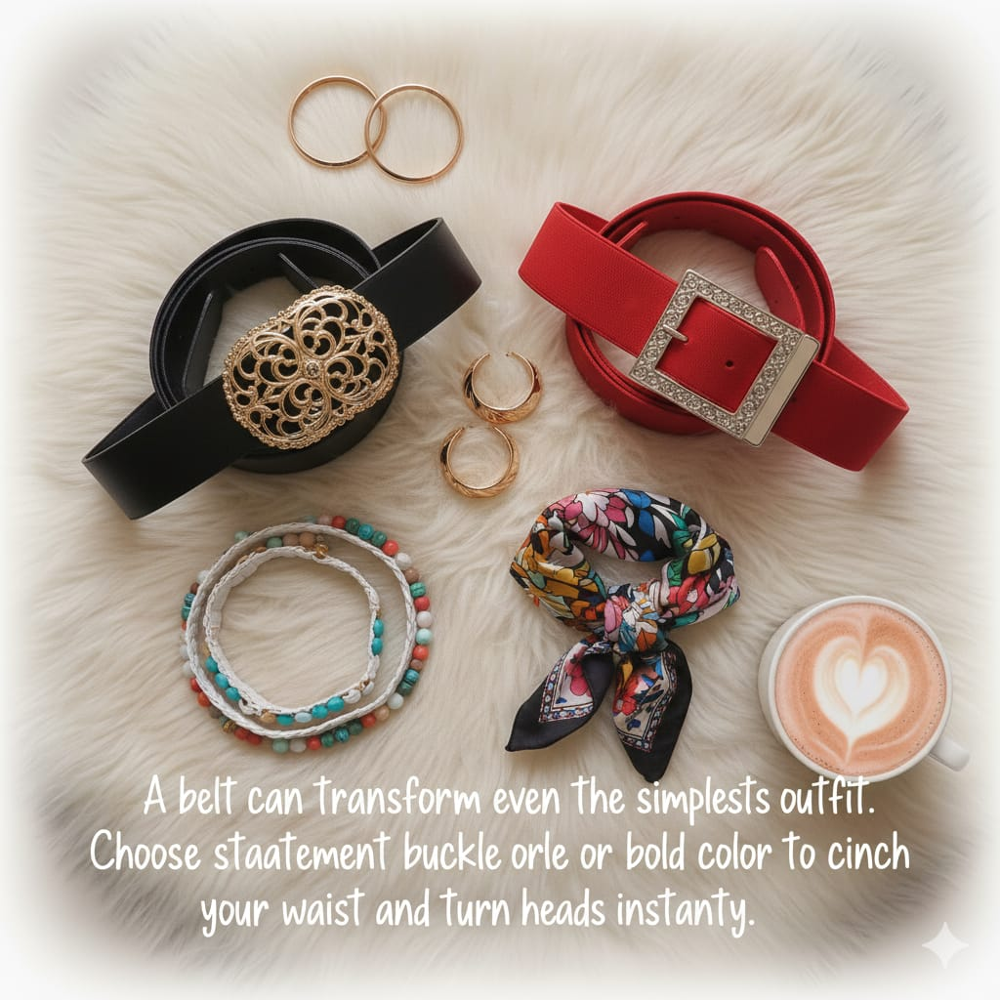
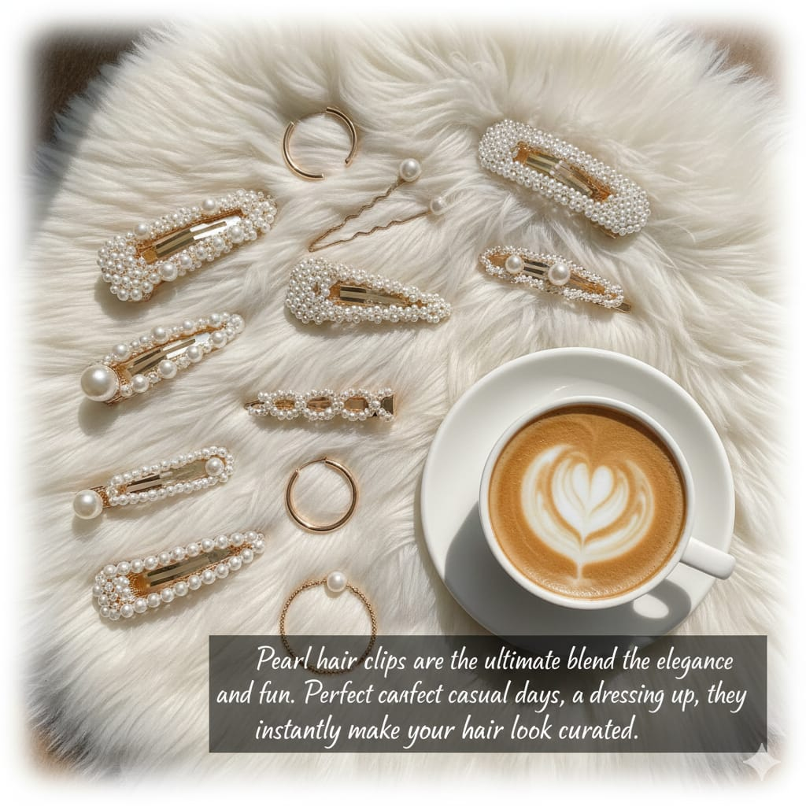

Accessories are the ultimate way to transform any outfit from basic to wow. Whether it’s a casual brunch, a night out, or a fancy event, the right accessory can completely elevate your look. This year, we’ve seen some amazing trends take over the fashion world. Here’s a list of Top 10 Must-Have Accessories for this year that every fashionista should own.
Bold, statement-making chain necklaces are everywhere. They can instantly upgrade a simple tee or sweater and make even casual looks feel luxe. Mix metals or layer multiple chains for that effortlessly chic vibe.
Tiny bags aren’t just cute—they’re essential. This year, designers are playing with geometric shapes, bright colors, and luxurious textures. Perfect for carrying your phone, lipstick, and a little confidence.
The bigger, the better! Oversized sunglasses add drama and glamour to any look. Think 70s retro vibes or modern square frames—they’re perfect for hiding tired eyes too 😉.
A belt can transform your outfit completely. This year, wide belts with bold buckles are dominating. Cinch your waist over dresses, blazers, or even oversized shirts to instantly refine your silhouette.
Silk scarves are back in a big way. Tie them around your neck, wear them as a headband, or even wrap them around your bag handle for that playful pop of color. Simple, versatile, and makes your outfit look intentional.

Pearls aren’t just for jewelry anymore! Hair accessories like pearl-studded clips, barrettes, and headbands are the cutest way to glam up a simple hairstyle. Perfect for brunches, office days, or Zoom calls.
Accessories don’t stop at jewelry—your shoes are part of the game too. Chunky loafers, bold heels, or quirky sneakers are trending. They make every outfit look polished yet fashion-forward.

Stacking bracelets is a fun way to express your personality. Mix metals, textures, and styles for that effortless boho-chic vibe. Don’t be afraid to go a little wild—it’s all about fun layers this year!

Yes, the bucket hat is officially a must-have accessory this year. From casual streetwear to chic high-fashion, this hat adds a playful, retro touch to any outfit.
Classic, timeless, and practical. A beautiful watch is not only functional but also an instant statement piece. Whether it’s sleek minimalism or bold gold designs, it’s worth investing in one that makes your outfit shine.
Accessories are the ultimate tool to express your style and personality. These top 10 must-haves are versatile, trendy, and can elevate almost any outfit. Whether you’re investing in a few key pieces or going all out, make sure to choose items that feel authentic to your style.
💡 Pro Tip: Mix and match accessories to create your unique signature look. Sometimes, one statement piece is all it takes to turn a basic outfit into a showstopper!